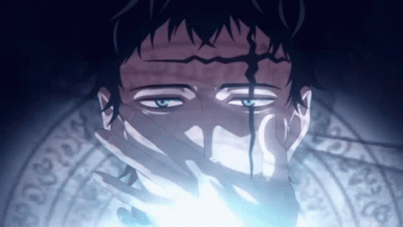

Zenon (Black Clover)

Zenon Zogratis is a character from the anime series Black Clover. He is a member of the Spade Kingdom's Dark Triad, holding the position of Vice-Captain of the Dark Disciples. Zenon is a powerful mage with the ability to manipulate bones and use spatial magic. He is a formidable opponent, using his powers to crush his enemies and achieve his goals.
Back to Main
Back to Top